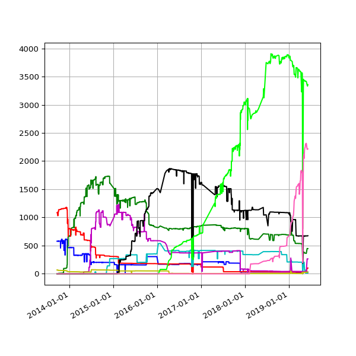
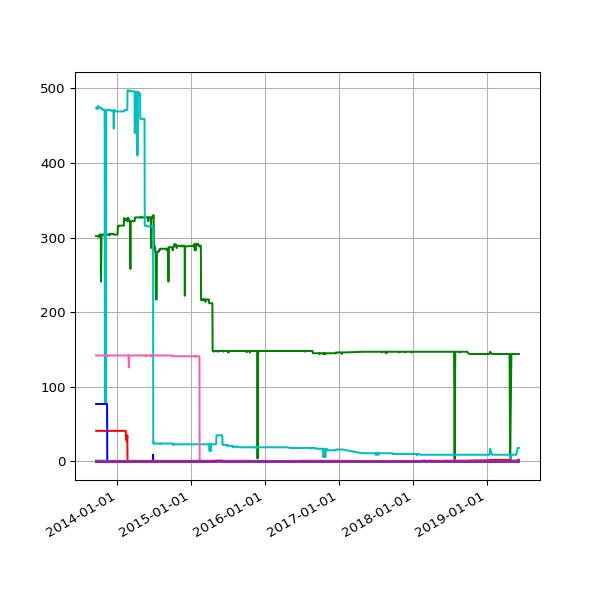
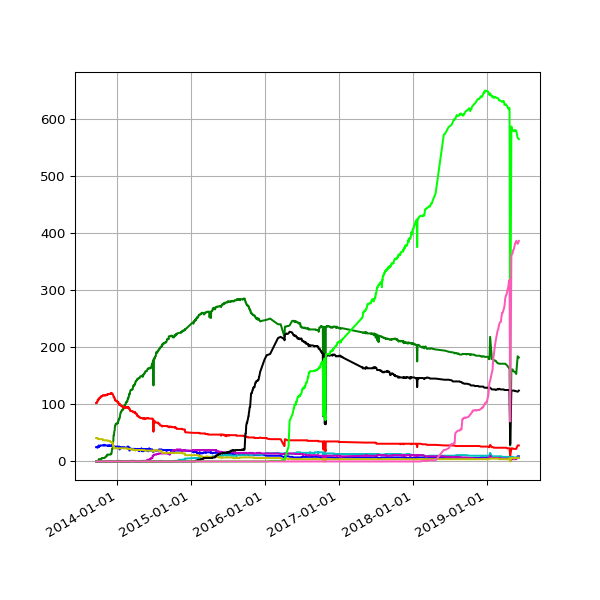
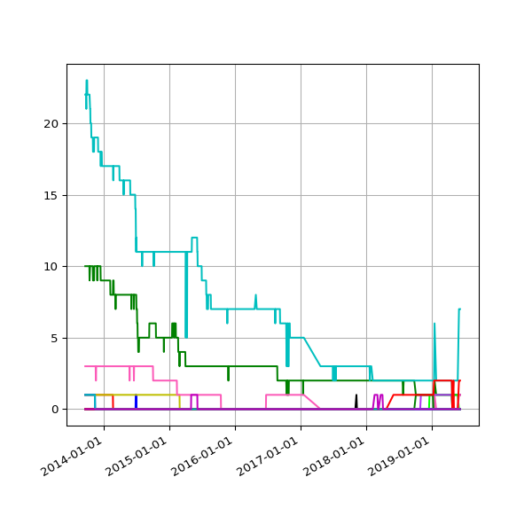

Which versions of the IATI Standard are being used?
Files are reported against a specific version of the IATI Standard, using the version attribute in the iati-activities element.
Count of files per IATI version, over time. Expected: these are actual versions of the IATI Standard.
Count of files per other versions, over time. These values do not actually exist as IATI versions.
Count of publishers per IATI version, over time. Note: If a publisher utilises two or more versions, they are counted for each.
Count of publishers per other version, over time
Files where the iati-activities/@version does not match iati-activity/@version
| Publisher | Files |
| Pact | pact-activitya04 |
Listing of publishers per IATI version. Click on any publisher name for more information.
1.01
| Centre for Indian Knowledge Systems |
| The Foundation Center |
| ICCO Cooperation |
| Population Service International |
| Hivos |
| UNITAID |
| World Wide Fund for Nature - Pakistan |
1.02
1.03
1.05
| International Climate Initiative / BMU - IKI Secretariat |
| Climate Investment Funds |
| France - Ministry for Europe and Foreign Affairs |
| Manx Times |
| openmindedly |
| Pact |
| UK - Scottish Government |
| The World Bank |
2.01
2.02
2.03
Listing of publishers publishing a non-recognised version number. Click on any publisher name for more information.